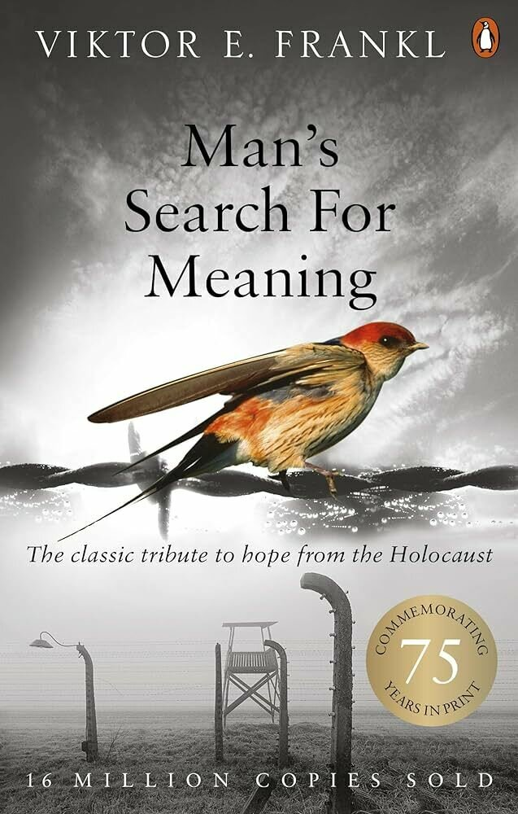

Searching for meaning
VISION
Viktor Frankl was an Austrian neurologist, psychiatrist, and Holocaust survivor.
In "Man's Search for Meaning"
he details his experiences in Nazi concentration camps and his method of finding Meaning in all forms of existence.


"He who has a why to live can bear almost any how."
Friedrich Nietzsche (1844-1900)
The Will to Meaning
-
Frankl argued that man's search for meaning is the primary focus in our lives
-
This meaning is unique and specific and must be filled by each of us alone
-
"Sunday Neurosis" - How humans can busy themselves rushing around all week with jobs and chores, then on a sunday, when it all stops, they are caught in a void - "An Existential Vacuum!"
-
His work led to a form of therapy, called logotherapy. The idea that having no will to meaning can lead to depression, aggression or addiction
Eye Specialist or Painter?
-
Frankl uses the metaphor of a painter and an optician to explain how logtherapy can help people find their own "Meaning"
-
Wheras a painter tries to convey a picture of the world as they see it, an optician tries to make us see the world as it really is .
-
They try to understand what their customer needs by asking questions, listening to specific answers, and reacting accordingly.
-
The questions they start with may be the same but the diagnosis, and prescription, depends entirely on what the customer tells them.
-
At the end of the process, the customer is able to see more clearly how the world around them really exists, and make sensible decisions according to their own vision, not someone else’s.
-
Quite often, the customer doesn’t even know they've got a problem until they try on their new specs and realise what things really look like
Frankl suggests we discover meaning in life in 3 different ways:
1. By creating work or doing a deed
2. By experiencing something or encountering someone
3. By the attitude we take to unavoidable suffering
Not just about us trying to find a single meaning in life....
...More about constantly finding meaning in what life puts before us
He refers to this constant meaning finding as
"Tragic Optimism"
Life puts before us a 'Tragic Triad' made up of:
Pain
Guilt
Death
But Life is potentially meaningful under any conditions, even those that are most miserable.
There is potential meaning inherent and dormant in all situations we have to face throughout our lives
If successfull the result will be :
1.Pain - We are able to turn suffering into human achievement/ accomplishment
3.Death - We use the experience of death in our lives to focus on life's transience, and are incentivised to take responsible action
2.Guilt - We use guilt as an opportunity to change oneself for the better
"To invoke an analogy, consider a movie: it consists of thousands upon thousands of individual pictures, and each of them makes sense and carries a meaning, yet the meaning of the whole film cannot be seen before its last sequence is shown."
Victor Frankl (1905-1997)
Applying Logotherapy in everyday life:
-
Create Something
-
Build Relationships
-
Find purpose in pain
-
Understand and accept that life is unfair
-
Embrace freedom to find meaning
-
Focus on others
-
Accept the worst